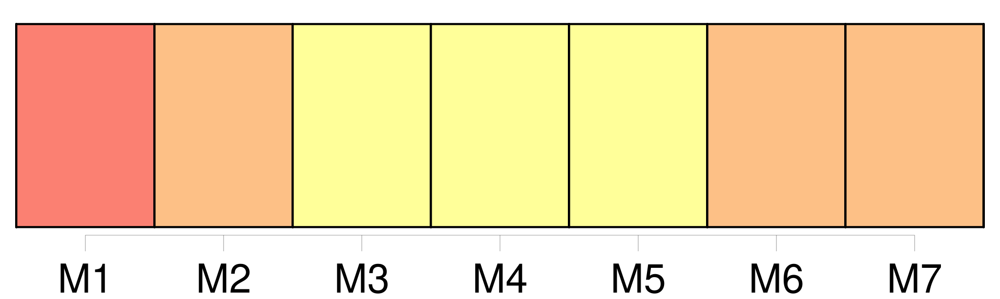
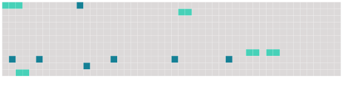

Longueur nb maillons : 12 mentions |
 |
[Une vieille femme] entra mystérieusement.
— Jeune homme, dit [-elle] , si vous voulez être heureux, ayez de la prudence, enveloppez -vous d’ une cape, abaissez sur vos yeux un grand chapeau ; puis, vers dix heures du soir, trouvez -vous dans la rue du Corso, devant l’ hôtel d’ Espagne.
— J’ y serai, répondit -il en mettant deux louis dans la main ridée de [la duègne] [14 phrases] À l’ heure dite, ivre d’ amour et bouillant d’ espérance, Sarrasine, le nez dans son manteau, courut au rendez -vous donné par [la vieille]
[La duègne] attendait. [1 phrases] lui dit [-elle] [1 phrases] [Elle] entraîna le Français dans plusieurs petites rues, et s’ [arrêta] devant un palais d’ assez belle apparence. [Elle] frappa. [1 phrases] [Elle] conduisit Sarrasine à travers un labyrinthe d’ escaliers, de galeries et d’ appartements qui n’ étaient éclairés que par les lueurs incertaines de la lune, et [arriva] bientôt à une porte, entre les fentes de laquelle s’ échappaient de vives lumières, d’ où partaient de joyeux éclats de plusieurs voix. Tout à coup Sarrasine fut ébloui, quand, sur un mot de [la vieille] , il fut admis dans ce mystérieux appartement, et se trouva dans un salon aussi brillamment éclairé que somptueusement meublé, au milieu duquel s’ élevait une table bien servie, chargée de sacro-saintes bouteilles, de riants flacons dont les facettes rougies étincelaient. |
 |
Il est possible de télécharger la ressource sur la page Ortolang |
Si vous avez des questions ou vous voyez des erreurs, merci d'envoyer un mail à silvia.federzoni89@gmail.com |